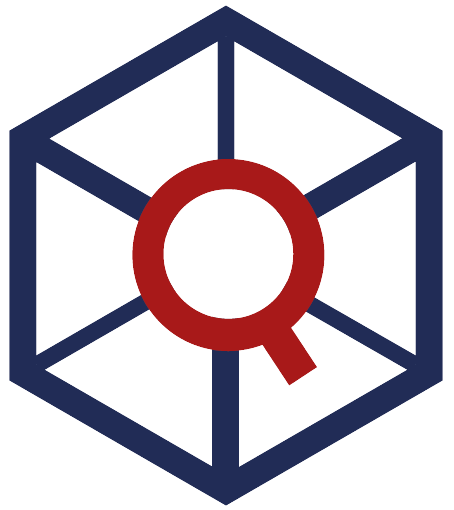

From the Spanish Society of Chemometrics and Qualimetrics (SEQyC), we are pleased to announce the VII Workshop of Young Researchers in Chemometrics,
which will be held on January 22–23, 2026 at the Faculty of Science and Technology, Leioa Campus, University of the Basque Country (UPV/EHU).
JIQ is a training and scientific exchange space for young people in the field of chemometrics.
📢 THE FINAL PROGRAM IS NOW AVAILABLE (And finally, coffee breaks and lunch will be included. 🍽️)
📢 Special Issue available
The opportunity is offered to publish in a Special Issue related to the VII Workshop of Young Researchers in Chemometrics.
For further information on the scope, contents, and editorial process, please consult the following link:
Rising Voices in Spanish Chemometrics – Special Issue (ScienceDirect)